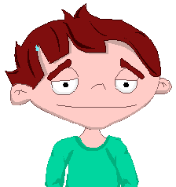
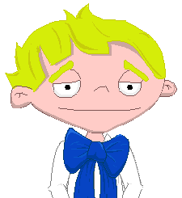
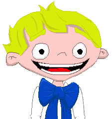

Tu personaje en el juego puede sufrir diferentes eventos relacionados con su salud. Puede enfermarse, recibir consultas del doctor o carecer de tu apoyo en mejorar su salud. En este capítulo puedes leer la causa de estos eventos, que además pueden pasar en la realidad también. Y presta atención a las sugerencias, que pueden ayudar a pasar más rápido a otros niveles.
Uyyyy, tu personaje padece estreñimiento no consigue ir al baño...
Afortunadamente el estreñimiento en la gran mayoría de las veces se produce por una alimentación inadecuada y determinados hábitos no saludables. Por ejemplo, el bajo consumo de alimentos ricos en fibras, poca ingesta de agua y falta de ejercicio.
Sugerencias Sus defensas estarán bajas y para sentirse mejor deberá consumir frutas y verduras, hacer ejercicio y tomar agua además de visitar al doctor. ¡Tu personaje debe evitar consumir harinas, arroz, polenta, golosinas o fideos, ya que puede agravarlo! |
¡Tu personaje tiene diarrea, que pena! ¡Ojo!, ahora tendrá que ir con mucho frecuencia al baño. Y corre el riesgo de perder mucho líquido.
Le puede pasar si olvidó lavar las manos. Pero, en realidad, puede pasar también si no se manipulan de forma higiénica los alimentos ya que existen muchos microbios en nuestras manos y en los alimentos.
Sugerencias Tu personaje deberá tomar mucha agua, consultar a su doctor y lavar sus manos con mucha frecuencia. Tratar de no consumir alimentos pesados, ricos en grasas o picantes y ricos en fibras. Tampoco es buena idea que tu personaje practique deportes si tiene diarrea. |
¡Qué pena! Tu personaje tiene dolor de cabeza y se siente muy mal. Su energía y diversión están disminuidas.
Le puede suceder si realiza muchas actividades sin descanso, como por ejemplo jugar y trabajar muchas horas, o practicar muchos deportes sin descansar. También puede suceder si no se alimenta lo suficiente.

Sugerencias Tu personaje deberá consultar a su doctor o descansar. Es recomendable que tu personaje no use demasiado la television o la XO. Y no te preocupes por el campeonato, el deporte se puede hacer luego. |
¡Tu personaje ha bebido alcohol!
El alcohol produce muchos daños a la salud de las personas. La energía y las defensas de tu personaje se verán perjudicadas. Los niños no deben consumir bebidas alcohólicas, y seguramente tu personaje ha bebido alguna de ellas.

Sugerencias Ahora descansar, ingerir agua y alimentarse correctamente son algunas de las acciones que deberá hacer para mejorar su estado de salud. ¡Y olvídate del alcohol, de esta forma nunca ganaremos el campeonato! |
¡Tu personaje tiene mucha hambre! ¿Olvidaste alimentarle?
Su energía, peso, y sus defensas pueden disminuir si no se alimenta correctamente. El hambre es una señal que nuestro cerebro emite cuando necesitamos ingerir alimentos.

Sugerencias Deberá ingerir alimentos saludables mediante los platos completos y deberá consumir pocos dulces o snacks para mantener su salud. Recuerda que debe consumir alimentos variados y de los 6 grupos de alimentos, ¿te parece? Recuerda que antes de hacer las tareas, deportes o divertirnos, tu personaje deberá alimentarse correctamente. |
¡Ups! Tu personaje tiene mucha sed. Su energía puede disminuir.
La sed es una sensación que emite nuestro cerebro cuando nuestro organismo necesita ingerir líquidos, la barra de agua seguramente está demasiado baja.
Sugerencias Tu personaje deberá ingerir mucha agua. Recuerda que tu personaje que deberá consumir mucha agua al practicar deportes y exponerse al sol y calor. |
Tu personaje se encuentra muy cansado, seguramente sus defensas estarán bajas y su diversión también.
El cansancio muchas veces nos está indicando que nuestra salud puede desmejorar y que podemos estar realizando demasiadas tareas que nos están perjudicando.

Sugerencias Recuerda que tu personaje deberá sentirse un superhéroe para ganar el campeonato. Entonces, a descansar, alimentarse sano, y a dormir. Tu personaje debe evitar actividades intensas en este momento. |
¡Puaj! Tu personaje tiene las manos muy sucias, sus defensas pueden verse perjudicadas.
Las manos son unas de las partes del cuerpo que mas microbios pueden contener, y pueden ser vectores de muchas enfermedades si no nos lavamos las manos. El lavado de manos es unas de las mejores medidas para evitar enfermarnos y enfermar a los demás.

Sugerencias Deberás enseñar a tu personaje como lavarse correctamente sus manos en los momentos indicados, o ducharse diariamente. De esta manera evitarás que tu personaje se enferme, y el trofeo estará en sus manos. ¡Entonces a ganar! |
¡Uyy! ¡Que pena! Tu personaje tiene un fuerte dolor de dientes. Su energía y defensas se verán perjudicadas así como su descanso.
El dolor de muelas o dientes puede estar indicando una enfermedad odontológica que podemos evitar con un simple cepillado de dientes con pasta luego de cada comida.
Es recomendable consumir limitadamente azúcares y golosinas para evitar la aparición de caries y otras enfermedades.

Sugerencias Es muy importante que tu personaje cepille sus dientes, consulte al dentista y realice los controles en salud con el doctor. Deberás evitar el consumo de las golosinas y dulces. |
Tu personaje esta muy aburrido. Su barra de energía seguramente está bajando.
La diversión y recreación también es parte de nuestra salud, si realizamos actividad física y jugamos, nuestra energía aumentará y nos volveremos saludables.
Sugerencias Todos los niños y niñas tienen derecho a la recreación, diversión y al tiempo libre. Entonces, tu personaje también! |
¡Qué bueno! Tu personaje se siente muy feliz y se nota en su cara.

Sugerencias Cuando tu personaje logre descansar y divertirse, sus defensas aumentarán y se volverá más saludable. ¡Jugar en el campeonato va a ser super divertido! |
Mucha energía
¡Que bueno! Tu personaje tiene mucha energía, y se ve saludable.
Sugerencias Para que tu personaje tenga energía y esté saludable, será necesario que se alimente en forma variada y que a su vez logre un buen descanso. Para la victoria su energía deberá ser óptima. |
¡Qué lindo! Tu personaje se ve muy bien.
Sugerencias Para que tu personaje se vea bien es muy importante que se alimente bien y que se higienice todos los días. Verse bien también es importante y muchas veces nos está indicando que estamos en un buen estado de salud. |
¡Ups! Tu personaje parece muy sedentario.
El sedentarismo es uno los factores que aumentan la probabilidad de tener enfermedades cardiovasculares. Se produce cuando las personas no realizan actividad física lo suficientemente necesaria. Es muy importante realizar todos los días por lo menos 30 minutos de actividad física para evitar ser sedentarios y sentirnos más saludables.

Sugerencias Para evitar que tu personaje se vuelva sedentario, deberá restringir las horas para jugar en la XO u otras actividades que si son realizadas mucho tiempo, pueden llevarlo al sedentarismo. Si tu personaje comienza a prepararse para el torneo, ¡el sedentarismo no será un problema! |
¡Hayy! Tu personaje estuvo al sol y ahora está lleno de quemaduras solares, pobrecito.
Las quemaduras solares se producen cuando nos exponemos mucho tiempo al sol, a horas impropias y cuando no utilizamos protección adecuada en nuestro cuerpo.
Sugerencias Para sentirse mejor tu personaje deberá consultar al doctor, tomar mucha agua y colocarse en lugares donde haya sombra, sobre todo los días soleados y calurosos o cuando tu personaje realiza deportes al aire libre. Recuerda tener en cuenta estos consejos el día del torneo. |
¡Pobrecito! tu personaje esta con náuseas y vómitos.
Muchas veces las náuseas y vómitos se producen por no tener hábitos de higiene adecuados, como por ejemplo lavarnos las manos antes de comer o higienizar los alimentos. Existen también muchas otras causas de náuseas y vómitos, como cuando ingerimos alimentos en exceso.
Sugerencias Es muy importante que tu personaje consulte al doctor y tome agua, en pocas cantidades, fría y sin gas. Recuerda no consumir alimentos pesados, ricos en grasas, dulces o platos muy abundantes. |
Tu personaje tiene mucho dolor de panza, ¡cuídalo más!
El dolor de panza o dolor abdominal puede deberse a muchas causas. Algunas de ellas pueden ser el consumo rápido excesivo de alimentos, incluso alimentos en mal estado o mal higienizados.
Sugerencias Tu personaje deberá descansar, dormir y además, si el dolor se mantiene por mucho tiempo, deberá visitar al doctor. Evita que consuma alimentos pesados, ricos en grasas o dulces. |
¡Attchissss! ¡Tu personaje se ha engripado!
La gripe o influenza es una enfermedad viral que se produce rápidamente por contacto de partículas virales contaminantes, que muchas veces están en nuestras manos no higienizadas, o cuando nuestras defensas están muy disminuidas, entre muchas otras causas.

Sugerencias Tu personaje deberá visitar al doctor, descansar, tomar agua y alimentarse saludablemente. Es muy importante que lave sus manos frecuentemente y los utensillos que utilice, así como mantener una alimentacion sana y liviana. Ahora no es hora de realizar tareas o esfuerzos para así poder llegar en condiciones al campeonato. |
Pobre de tu personaje, se ha intoxicado mientras fumigaba insectos.
Las intoxicaciones con agroquímicos e insecticidas son muy frecuentes y pueden producir serios problemas a la salud si no tomamos las medidas adecuadas. Es muy importante lavar nuestras manos al utilizar esos productos, así como también lavar correctamente los alimentos antes de consumirlos.
Sugerencias Si tu personaje fumiga insectos en la huerta y no lava sus manos ni se ducha luego de hacerlo, correrá el riesgo de intoxicarse. ¡Deberá recurrir rápidamente a su doctor! |
Deberías ser más responsable con tu personaje pues has olvidado llevarlo a su control en salud.
Los controles en salud son oportunidades en donde el equipo de salud puede ayudar a evitar que nos enfermemos porque podemos aprender sobre hábitos saludables, sobre nuestro cuerpo, sobre cómo podemos evitar enfermarnos, sobre nuestra sexualidad y muchísimas cosas más.
Sugerencias No debes olvidar llevar a tu personaje a sus controles, ni tampoco olvidar llevarlo si se siente enfermo. Antes del campeonato asegúrate que se encuentre en buen estado. |
¡Ups! Creo que a tu personaje le esta faltando vitaminas, se ve muy débíl. ¡Pobrecito!
Las vitaminas son nutrientes que, aunque en pequeñas cantidades, son vitales para el organismo. En general no pueden ser fabricados por el organismo, por lo cual deben obtenerse de los alimentos que ingerimos.
Sugerencias Trata de que tu personaje consuma frutas y verduras todos los días, pues son una fuente rica en vitaminas. Si lo haces, el campeonato será mas fácil. |
¡Hey! Creo que tu personaje olvidó consumir alimentos ricos en proteínas.
Las proteínas son nutrientes básicos para la vida. Se encuentran principalmente en alimentos de origen animal y también, aunque con menor riqueza, en alimentos de origen vegetal.
Sugerencias Entonces trata que tu personaje consuma alimentos tales como leches, quesos, huevos o carnes, que son muy ricos en proteínas. Ayudan a desarrollar nuestros músculos para que estén fuertes para el campeonato. Además cumplen muchísimas funciones más. |
Tu personaje esta olvidando consumir alimentos ricos en fibras.
La fibra alimentaria ayuda a que podamos movilizar el intestino sin dificultad, y regulariza el colesterol de nuestro organismo. Además se cree que ayudaría a disminuir la incidencia de cáncer intestinal, entre otras funciones beneficiosas.
Sugerencias Deberás hacer que tu personaje consuma diariamente alimentos ricos en fibras, como por ejemplo las frutas con cáscaras, alimentos con cereales o leguminosas entre otros. |
¡Pobre tu personaje! Tiene muchísima sed.
El agua es el principal e imprescindible componente del cuerpo humano. El ser humano no puede estar sin beberla más de cinco o seis días, sin poner en peligro su vida.
Sugerencia No olvides hacer que tu personaje consuma abundante agua diariamente, sobre todo al realizar deportes o al jugar al sol y cuando hace mucho calor. |
Tu personaje esta sin energía. Le faltan carbohidratos.
Los carbohidratos son saludables en todas sus formas y variedades. Son fundamentales para un buen funcionamiento intestinal y también son un importante combustible para el cerebro y los músculos activos.
Sugerencias Tu personaje deberá consumir carbohidratos todos los días, sobre todo en el desayuno para poder empezar el día con mucha energía. Si logras esto en tu personaje, ¡seguro que ganará por goleadas! |